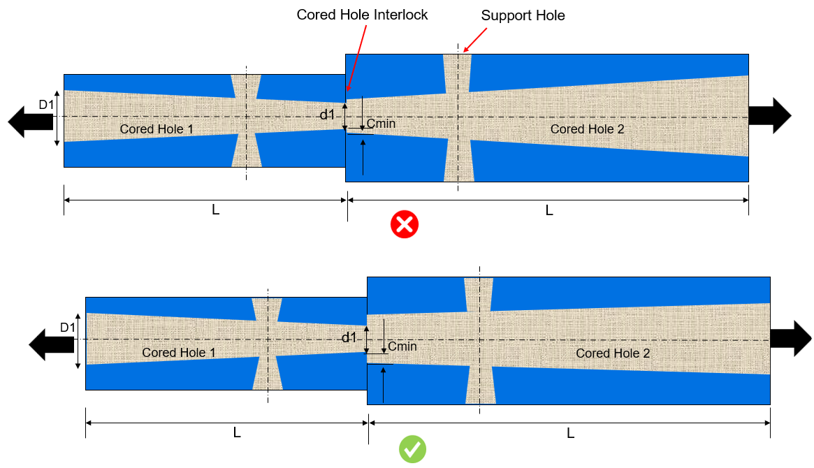

コア穴の長さ／直径比が構成された値より大きく、かつインターロック形状が存在する場合、本ルールは次の2つの条件をチェックします：
コア穴の最小直径（d1）：コア穴の最小直径は、構成された値より大きい必要があります。これにより、穴がコアの構造健全性を支えるのに十分な大きさとなり、成形圧力下での潜在的なたわみ（変形）を防ぐことができます。
コア穴インターロックの最小クリアランス（Cmin）：インターロック形状の最小クリアランスは、構成された値より大きい必要があります。これにより、インターロックが適切に機能するための十分なスペースが確保され、コアに安定性を与え、たわみ（変形）の防止に役立ちます。
このような問題を防ぐためには、コア同士に十分なインターロック（かみ合わせ）を設けることが重要です。インターロック形状はコアを安定化させ、圧力下でコアがたわむことを防ぎます。このインターロック機構は構造的な支持を提供し、成形サイクル中にコアが所定位置に保持され、たわみに抵抗できるようにします。インターロック形状の作成が不可能な場合は、コアの反対側にサポート穴を設けるなどの追加の設計要素が必要になることがあります。これらのサポート穴はコアの安定性をさらに高め、コアのたわみに起因する問題を最小化するのに役立ちます。
2つの反対方向から抜き取られる長尺のコア穴では、コアの十分な強度と安定性を確保し、コアのたわみ問題を効果的に防止するために、コアのインターロック形状が必要です。コアが2つの反対方向からアクセスされる場合、コアの長さと高い成形圧力により、たわみのリスクが高くなります。これに対処するため、インターロック形状は十分な支持と位置合わせを提供するように設計し、成形工程中にコアが確実に所定位置に保持されるようにする必要があります。このインターロックはコア同士の堅固な結合を形成し、たわみや位置ずれを引き起こす不要な動きを防止する必要があります。

注記：
コア軸とコアの抜き方向（取り外し方向）が一致している場合、そのコアは長尺コアとして扱われます。